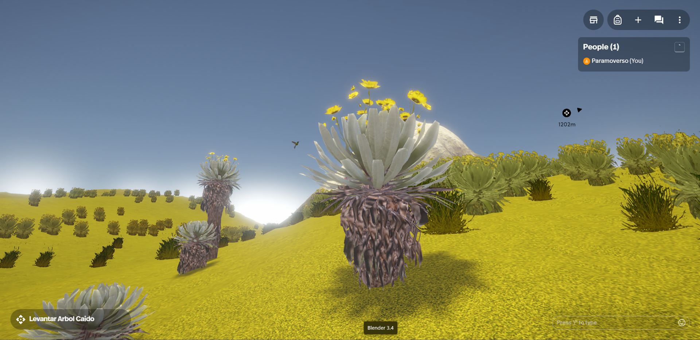
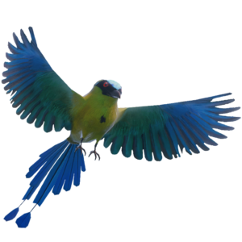

A virtual experience in the metaverse about the páramos, aiming to promote protection and awareness about this unique environment’s great biodiversity and resources.
We promote awareness in young students and adults about the páramo and its biodiversity, which is only seen in the high mountains of equatorial areas. We will also promote direct actions to restore the biodiversity in these ecosystems.
The páramos are places that harbor great biodiversity in both fauna and flora, which not only play a crucial role in capturing carbon dioxide from the planet but also in filtering the water that supplies countless ecosystems through rivers and lagoons distributed throughout Colombia. Despite their beauty and natural wealth, there are many risk factors such as fires, deforestation, mining, and climate change that compel us to focus on the conservation of the páramos and the sustainable use of water. For this reason, we want to offer an accessible, immersive audiovisual experience that encourages more people to take action for the protection of Colombia’s páramos.


Multiplatform VR Experience
Paramoverso is a multiplatform experience hosted on Spatial, featuring interactive missions inviting users to explore steppes filled with frailejones, grasses, mosses, bears, ocelots, birds, and insects. Travel to the Colombian mountains to discover the biodiversity inhabiting the páramos of each mountain range and to understand the threats endangering these ecosystems.